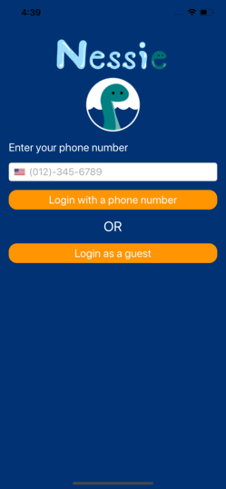
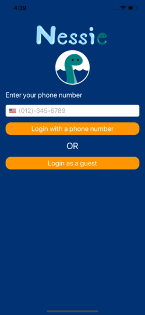
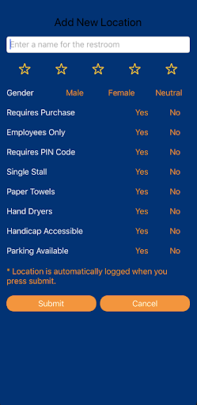
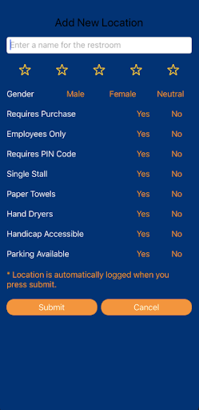

About
Nessie is a mobile application that helps people find public restrooms and allows them to rate their cleanliness. Sometimes it's difficult to find a restroom when you're out and about whether it be actually in a obscure location or the closest restroom is in a business and requires a purchase to be used, Nessie is meant to take away some of the stress so you can find a restroom with ease. The app allows users to also rate the restroom's cleanliness and add tags, such as handicap stall availability, parking accessibility, key/pin required, and many more. Originally made by team members Iev Khov, Jennifer Ly, Jenna Zing, and Vivienne Zing for UC Davis 2019 Fall Quarter ECS 189E: Android & iOS Fundamentals course project.
Concept Designs
Designed collaboratively with all members, drawn by Vivienne Zing.
Finalized Graphics
Drawn by Jennifer Ly in Clip Studio Paint.
High Fidelity Prototype
Made in Xcode 

 

Features
Map and Sortable Location Table
The app loads with a map with custom color coded Nessie restroom icons and pullable locations table. The table is defaultly sorted by closest distance but can also be sorted by ratings.
Restroom Rating and Details
When selecting a restroom from the map or table, you will be able to get directions to said restroom along with more details such as the type of stall, drying options, etc.
Setting Options
Opening the settings screen allows users to pick their preferences for the restrooms they'd like to see and filters to results seen on the map and location table.
Add Locations
Since this app is mainly based on user feedback and there would be no possible way for our team of four to add every restroom ourselves, we have an option to add a new location if one is found.
Additional/Future Concepts and Features
Some features that the team discussed for future incorporation.
Comments/Reviews
While some people might be fine seeing an average star rating, others find written reviews more reliable in determining the actually quality of whatever they are viewing, and that could include restrooms as well.
More Settings/Filters
We originally brainstormed a few key filters to start with, but we're certain there are others to consider so we'd like to add more filters such as diaper change stations, mirrors, etc.
Adding Hydration Stations
The original idea of Nessie included finding water fountains and hydration stations but we wanted to focus on the restroom aspect first, but this is still a concept we would like to add into our app.
In App Navigation
Currently, our app is coded to take the location of the restroom and opening an external map application to give the user directions, but of course the ideal is to not have to leave the app.